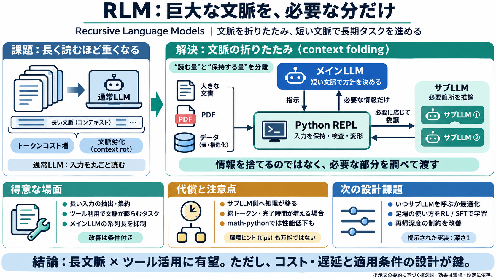

Recursive Language Models: the paradigm of 2026
The patterns are very similar as those seen with GPT-5-mini. Also similar are the number of prompt and completion tokens…

Recursive Language Models（RLM）は、巨大な文脈をそのまま読ませる代わりに、Python REPLとサブLLMへ委譲して“短い文脈で”長期タスクを進める枠組みです。
文脈長を伸ばすほどトークンコストは線形に増える一方、性能が落ちる「context rot」が起きます。長時間エージェントでは、巨大な入力や途中結果の“保持”がボトルネックになります。
RLMは、情報を“要約して捨てる”のではなく、必要部分だけを動的に調べ・変形して渡す「context folding」を目指します。
入力を丸ごと読む（読む量↑・維持↑）
Pythonで検査/変形し、必要だけ渡す
メインの系列長を抑え、安定化を狙う
RLMは、永続的なPython REPLにデータ調査・変換を任せ、必要ならPythonからサブLLM（サブ推論器）を呼び出して処理します。
短い文脈で方針・指示を組み立て
入力（例: PDF/動画/データ）を検査・変形
必要箇所だけを再帰的に推論
環境ごとに最適化の余地（tips）
同一環境で、(1) 通常LLM、(2) RLM、(3) RLM＋環境ヒント（tips）の3系統を比較します。さらに4つの環境で挙動を観測し、相対差を見ます。
通常LLM（環境のツール利用あり）
RLM（Python＋サブLLM委譲）
RLM＋tips（環境ごとの戦略指導）
報酬・トークン・時間など（相対比較中心）
結果としてRLMは一般に、長い文脈問題や、ツール使用でトークンが大量消費される状況で有利になりやすい傾向が示されます。
長い入力／抽出・集約が必要
Pythonで“必要だけ”を渡し、維持を軽くする
メインの系列長を抑える方向が現れる
常に勝つわけではない（後述）
一方で、math-pythonではRLMが悪化する傾向が見られます。RLM足場が常に有効とは言えず、学習不足や足場の使い方未最適化が理由候補として挙げられます。
RLMでパフォーマンス低下
効率的に使えていない（足場未学習）
将来: RL（強化学習）で足場利用を学習
トークン・時間の解析では、サブLLMがcompletion tokensを担うことで、メインLLMが短いまま処理が進む効果が観測されます。これはcontext foldingの狙いと整合的です。
メインLLMの系列長（入力維持）が抑制
思考トークンの“移動”がサブ側に発生
サブLLM呼び出し総量が増えやすい
並列でも完了時間が増えるケースあり
RLM＋tipsは改善することがありますが、誤ると失敗もします。足場（scaffold）は“正しい使い方を学習”する必要があり、ヒントは万能ではない示唆です。
環境の性質に合う戦略が引き出される
サブLLMへ寄りすぎて崩れる例
GLM 4.6でサブLLM方向に崩れるケース
ヒントは“安全策”ではなく設計変数
著者らは、モデルを大きくチューニングせずデフォルト設定で足場比較し、相対差を見やすくしています。研究として足場効果を切り分ける方針です。
LLM vs RLM vs RLM+tips を同条件に近づける
絶対性能ではなく“どこが効くか”を観測
実運用の最適化可能性は未確証
現状のRLM実装は再帰深度が1という制約があります。これが足場の柔軟性や分解戦略の獲得に影響しうるため、改善余地として挙げられます。
再帰深度: 1（提示文の範囲）
深度0や任意調整で挙動を最適化
自然な“マルチターン圧縮”の組み込み
タスクに応じた分解の質を上げる
RLMはメインLLMの系列長を抑えられる一方、サブLLM呼び出し総量が増えることで時間が増えがちです。長期エージェントでは遅延・コスト制御が鍵になります。
context rotの進行抑制を狙う
並列でも完了時間が伸びる場合
サブLLMをいつ呼ぶかの最適化
RL/学習で足場利用戦略を獲得
RLMは「長文脈＋ツール活用」で特に有利になりやすく、系列長を抑えつつサブ側へ思考を分散する点が観測されています。とはいえ足場の学習不足やtipsの誤り、コスト/遅延のトレードオフにより、万能な改善ではありません。
次世代の長時間エージェント設計の枠組みになりうる
足場利用の学習（RL/SFT）と適用条件の整理が必要
本スライドは、ユーザー提示の要約・意見・FAQ・補足（Web/過去履歴メモ）を元に圧縮しています。一次情報（論文/ブログURL）の明示がないため、ここでは“トピック参照”として整理します。
Recursive Language Models（RLM）
context folding / context rot
Prime Intellect / arXiv（提示文より）
The patterns are very similar as those seen with GPT-5-mini. Also similar are the number of prompt and completion tokens…
context windows and, even for shorter prompts, dramatically outperform the quality of vanilla frontier LLMs and common l…
Observation 3: LM performance degrades as a function of input length and problem complexity, while RLM performance scale…
Observation 3: LM performance degrades as a function of input length and problem complexity, while RLM performance scale…
# Prime Intellect ID: PJCBzy1UlsVv Website: www.primeintellect.ai Legal name: Prime Intellect, Inc. Headquarters: San Fr…